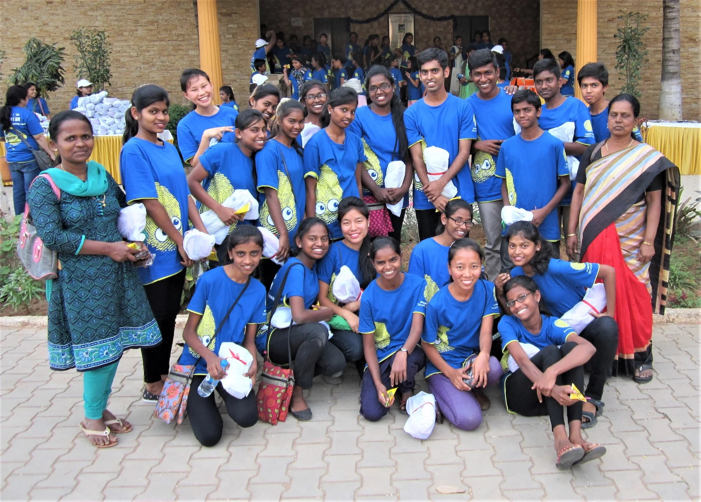

About the Blessing Home
Heartbreakingly, a large number of stranded and defenseless children around the world lack nourishment, medicine, protection, garments and schooling. Some are forsaken by parents who are either addicted to drugs or alcoholism, while others are left on the streets because their families are excessively poor, making it impossible to nurture them. The message these kids hear is constant: You are undesirable, you are separated from everyone else in the world, and you matter to nobody. The hope of a happy life remains a far off dream.
Who We Are
Blessing Home is a registered trust that was founded to aid in rescuing children from situations of abuse, homelessness or severe neglect. We do this by giving residential care, supporting education, medicine and opportunities for self-sufficiency and dignity. It was started in August 2003 by Prema Devanandam, a social worker, to protect and heal children victimized by neglect, exploitation and homelessness; also from the abusive and uncaring environment of the slum districts of Bangalore and poverty-stricken villages beyond. We believe Blessing Home will make a big difference in these young lives. We currently care for 22 children in residence, with caretakers who look after them with love, warmth, security, and stability that only a home can provide. We also help many more families in Bangalore and KGF with school fees and monthly provisions. After 23 years in rented houses, we have purchased land and begun building a permanent home.
Our Vision
Is to provide safety, nutrition, education, medical attention and love that these abandoned children deserve; to enable and empower such children to stand on their own feet, helping them become responsible citizens and to lead meaningful lives contributing to the people and society around them.
Our Mission
Is to participate and work together with local authorities and individuals to offer a chance at life and a new start to homeless and endangered children. We provide for a good education, periodic medical care, security and affection, a supportive environment that promotes self-discipline, motivation and excellence in learning. With the help of generous partners, we demonstrate the love of God in tangible ways through our works. To be fully accountable to our partners, sponsors and well-wishers.

What We Do
Blessing Home is a transitional safe home where children are secure and relaxed. They have food packed with nutrients, a bed, clean clothes and lots of love. All of our children attend English medium schools where they integrate with kids from normal homes. They receive regular medical and dental attention and extra tuition is also provided to help them to cope up with studies, when necessary. They seize every opportunity to learn and many excel academically, so that they can grow to be valued members of society with a promising future and a memorable past. At Blessing Home we believe that to effect change we need to reach the wider community and not just care for needy individuals. Our plan is to minister to the needs of whole families and communities; to work with parents of the children in our care and to transform communities. We also take the children out to a variety of new experiences, including visiting old people's homes and participating in numerous cultural programs. We also try to take the children on a much-deserved holiday every summer.
The Founder
Prema Aunty, the founder of Blessing Home Trust, had been working for 8 years as a social worker with some of the poorest, marginalised and neglected people of India. Visits to slum areas caused her deep hurt and concern and she could not walk away doing nothing. Coming from a similar background, she was particularly moved to help the children who only knew the feeling of hunger, pain, and loneliness.
In August 2003 she took a step of faith to care for 13 children from a Bangalore slum who were suddenly homeless. Her vision and desire for some of these desperate children is now being realised. The past many years have had their share of tests, trials and triumphs. God has never let them down, and miracles are an everyday experience. Prema Aunty still runs the Home with a few other staff now, and some help from the older children. She can be reached at blessinghome2003@gmail.com.

Contact Us
Email: blessinghome2003@gmail.com
Mobile: 97413 79444, 76194 22426
Landline: 080 284 45172
Mail:
Blessing Home Registered Office: No. 55, 1st Cross, BDS Gardens,
Hennur Main Road, Kothanur Post, Bangalore 560-077, India